cloudflare的代理
cloudflare对于我们开发者来说，应该并不陌生，和vercel类似，人称”赛博菩萨”，因为它对开发者提供了很多免费的工具和服务来提升网站的安全性、性能、稳定性，今天不去介绍什么是正向代理，什么是反向代理，有兴趣的可以自行搜索，今天主要是分享如何通过cloudflare的worker部署一个正向代理访问github一类网站的工具。
域名（必备
cloudflare账号（必备
- 步骤1：
在cloudflare首页中选择添加域
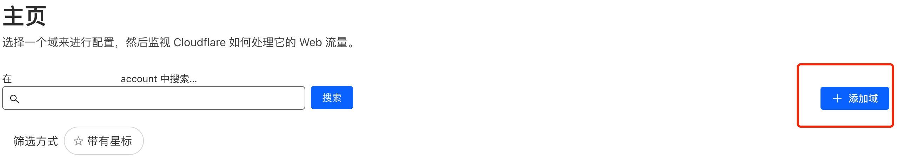 - 步骤2：
输入你的域名
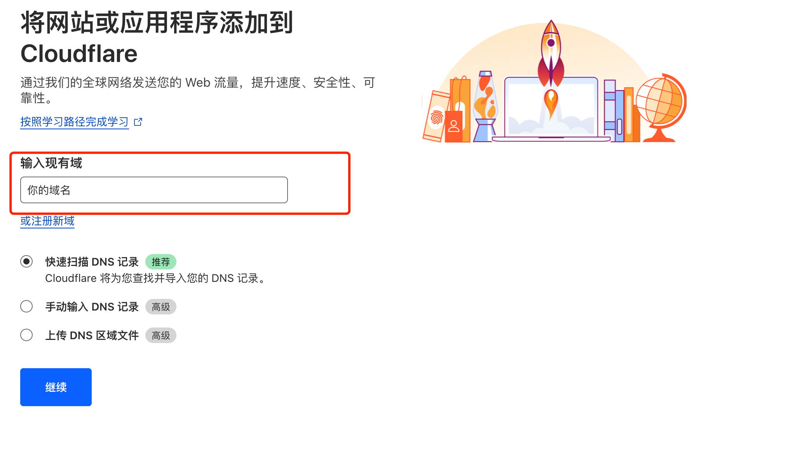 - 步骤3：
选择免费版本
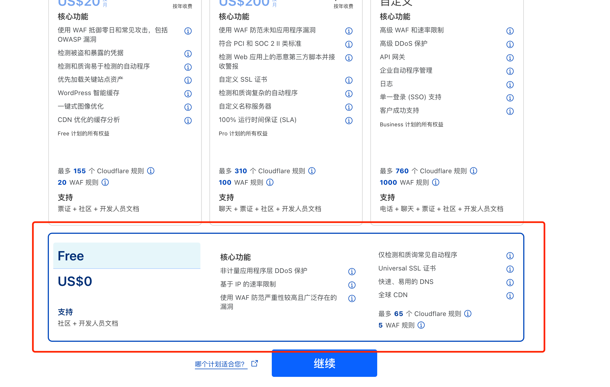 - 步骤4：
修改域名的DNS
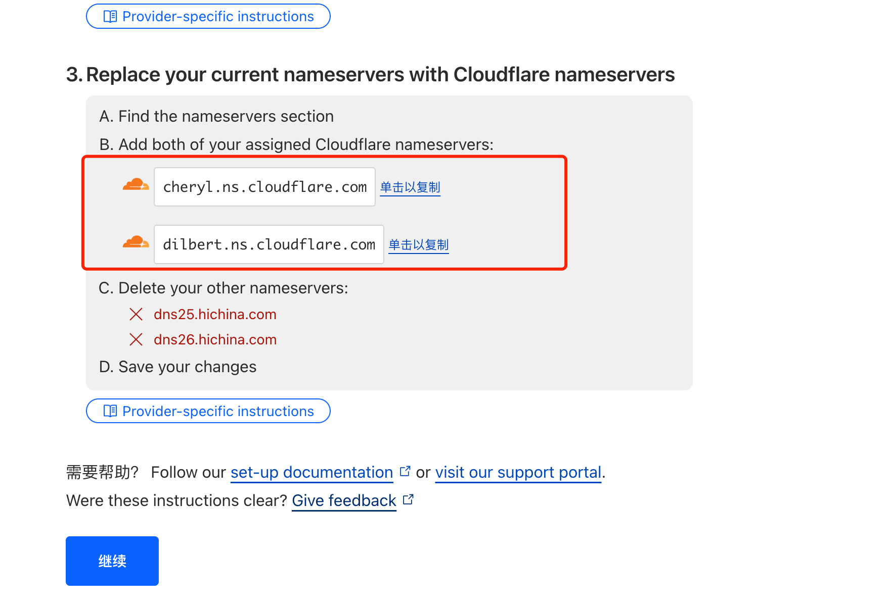 - 步骤5：
以我阿里云域名为例，在域名管理里面选择DNS修改
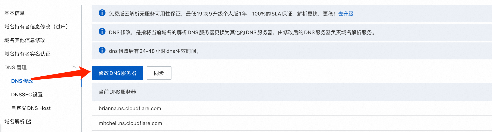 - 步骤6：
输入步骤4的DNS后，验证手机号码，一路确定就行了
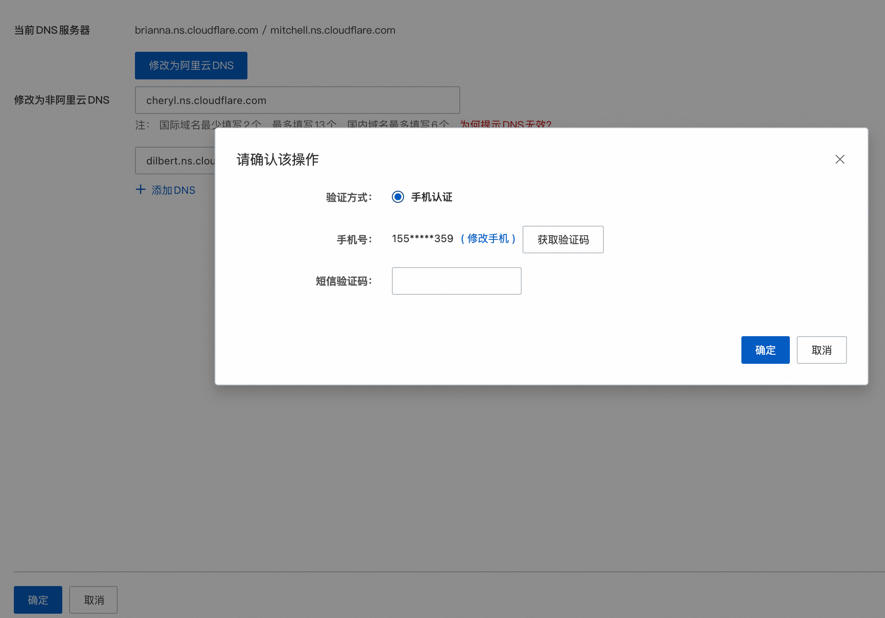 - 步骤7：
在cloudflare中继续操作，HTTPS都选择是就行。
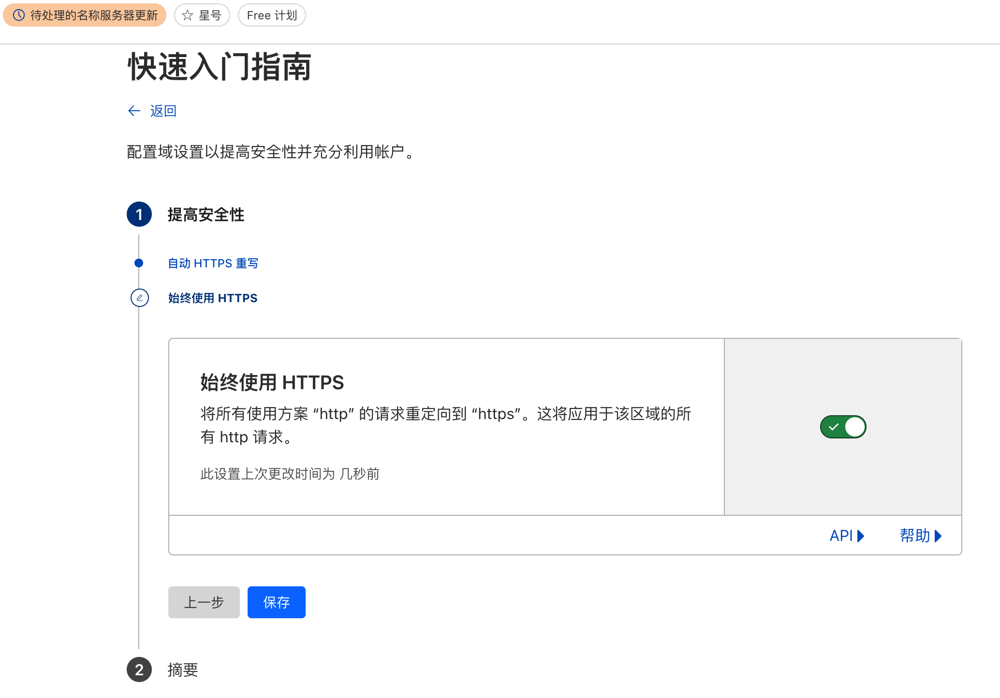 - 步骤8：
等待解析就行，一般不会太久，完成后会有邮件提醒，或者列表状态变更。
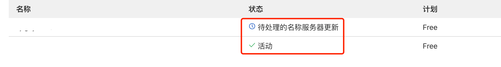
- 步骤1：
在cloudflare中的侧边栏Workers和Pages中，选择创建。
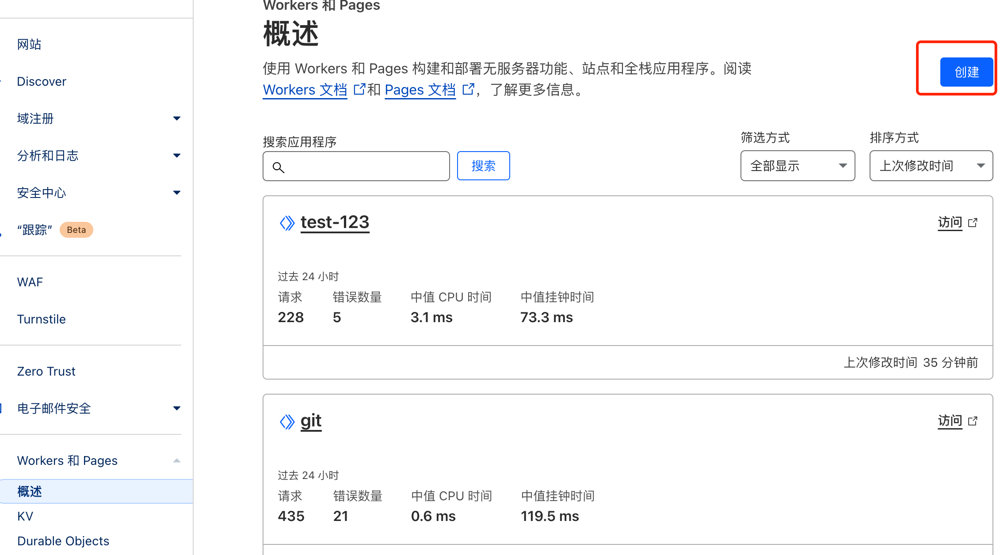 - 步骤2：
创建worker
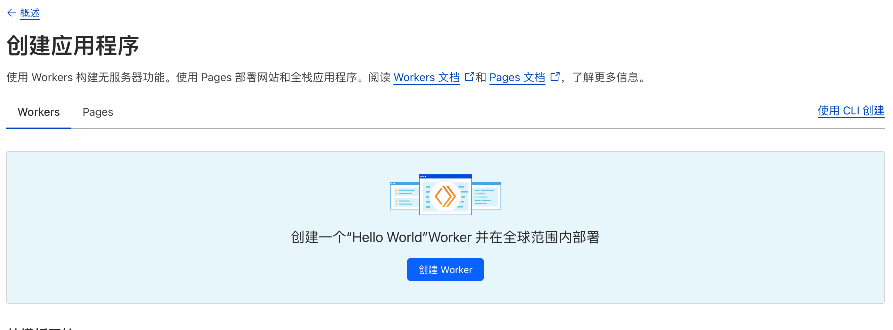 步骤3：
里面为默认代码, 可以使用下面代码
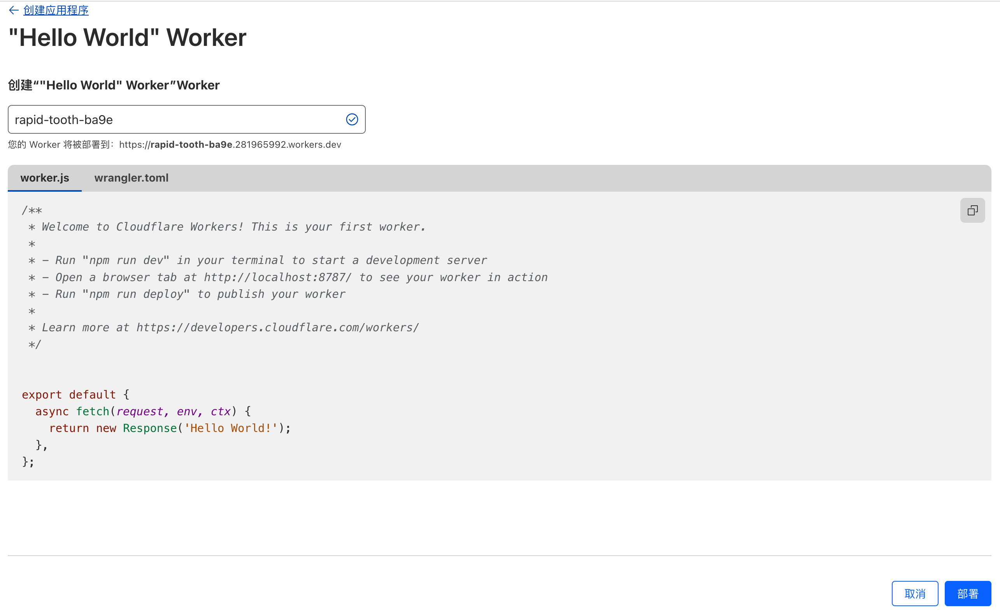1
2
3
4
5
6
7
8
9
10export default {
async fetch(request) {
const url = new URL(request.url);
//被正向代理的域名或者ip:端口号
url.host = 'github.com';
return fetch(url, { headers: request.headers, method: request.method, body: request.body });
},
};步骤4：
点击部署后，可以访问cloudflare分配给你的域名，如果访问不通，那么我就要把我们绑定cloudflare的域，添加到worker，可以随意添加你命名的二级域名，绑定成功后，等待自定义域生效，然后访问自己的二级域名，就实现了不用翻墙即可打开github等操作，切可登录。
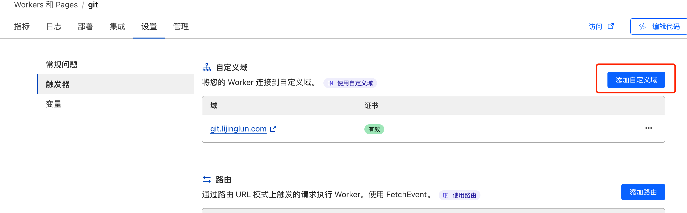
其实worker能做到的事情很多，上面只写了简单的代理，其实里面还可以把上面的请求内容细化，包括一些image、js、接口请求的重定向等；还可以自定义cookie，header等内容；通过worker其实可以把别人的网站，分分钟转移到自己的上面，还能修改内容。
PS：
后续可以聊聊Pages，也是非常有意思，除了能做静态网站托管外，还可以搭建属于自己的梯子。

感谢您的阅读，本文由 李经纶 版权所有。如若转载，请注明出处：李经纶个人博客（https://lijinglun.com/2024/08/30/cloudflare的代理/）